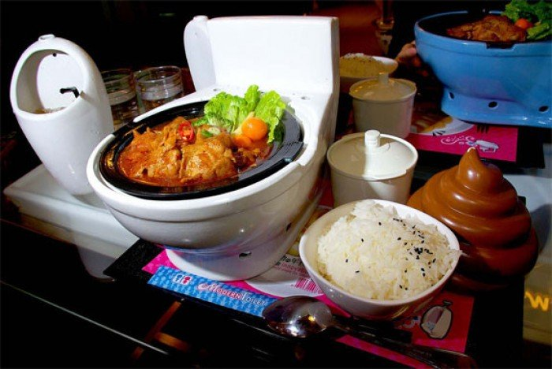

History

MaTongLao 马桶捞 is a lavatory style steamboat restaurant which offers a
bizarre dining experience. Its unique name originates from the term
‘Ma-tong’, which literally means toilet bowl and the slogan of the
restaurant is ‘Your disgust is our honor’. The restaurant was founded by
Mr Gayan in 2010, who was a janitor that cleans toilets at restaurants.
After many years of toilet cleaning, he had an idea to open a restaurant
which combines the essence of food and toilets. He strongly believes
that fusing the opposite polarities of delicious food and repulsive
toilets will attract a lot of customers and dominate the F&B industry.
As there are many other strange themed restaurants in the industry,
MaTongLao initially struggled against its strong competitors such as
prison style or hospital style restaurants. With the increasing
popularity of social media websites, the ease of sharing information
with others helped to propel MaTongLao to achieve its present success.
First time diners often share their special and unusual experience with
others through social media, which helps to enlarge the customer base.
Since then, MaTongLao has expanded from a small local shop to
international branches located around the world, serving millions of
customers. The flagship restaurant located in Sunway Velocity Mall,
Kuala Lumpur was awarded three Michelin stars in 2014 and currently
ranks first on TripAdvisor.